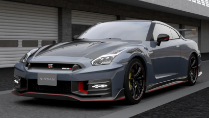

Enquanto nova geração não vem, esportivo ganha reestilização para sobreviver por mais um tempo
Nissan GT-R 2024 estreia com visual renovado e até 600 cv de potência
O Nissan GT-R é um carro que já tem uma certa idade. A geração atual, conehcida como R35 e que se descolou do Skyline, foi lançado em 2007, então o esportivo caminha para completar 20 anos de mercado. A produção havia sido encerrada em 2021, voltando a ser fabricado um ano depois e, agora, recebe uma reestilização, apresentada no Tokyo Auto Salon. Ganhou alterações na grade dianteira, suspensão atualizada e algumas versões especiais.